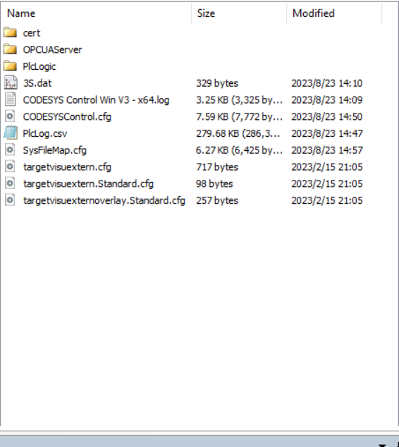
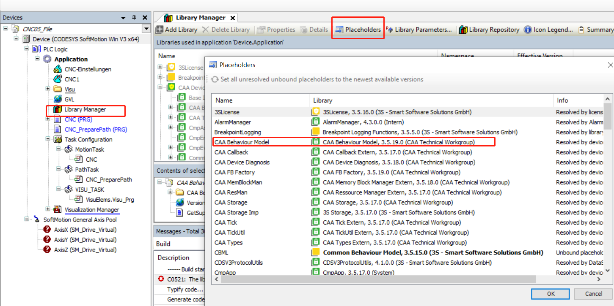
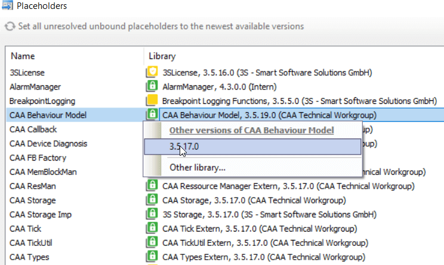

codesys 中使用 DIN 66025 标准编写 CNC 程序
下面介绍 DIN 66025 标准下编写 codesys CNC 程序的一些基本规则。
结构
基本格式如下：
% MyProgram
N10 G01 X100 Y100 F100 (comment)
N20 M8 G01 Z40 F20
N30 G03 X-100 R200 F100
N40 SubPrg{5}下面介绍 DIN 66025 标准下编写 codesys CNC 程序的一些基本规则。
基本格式如下：
% MyProgram
N10 G01 X100 Y100 F100 (comment)
N20 M8 G01 Z40 F20
N30 G03 X-100 R200 F100
N40 SubPrg{5}在下载到真实设备上和 simulation 模式时，调试时需要引用的路径是不一样的。
不管是哪种模式下，codesys 本身运行的一个容器环境根目录是如下：

PlcLogic 文件夹是 POU 运行的根目录，所有 G 代码文件的索引都是以此目录为根目录的。在程序中定义路径地址的时候只需要写 POU 根目录的子路径即可。
打开一个别人的项目后编译，发现出现 The library "caa behaviour model, 3.5.19.0 (caa technical workgroup)" was created with the unknown compiler version "3.5.16.30" 的报错：
但是我已经选择下载了缺失的库了，查询后发现是我的 codesys 版本过高，下载的对应库版本也高，而项目之前创建的时候可能是基于低版本库的，需要手动切换回对应版本的库即可。
library manager 下选择 placeholders 定位到报错的那个库：

双击后显示版本菜单，选择对应低版本的选项：

再次编译报错就会消失。